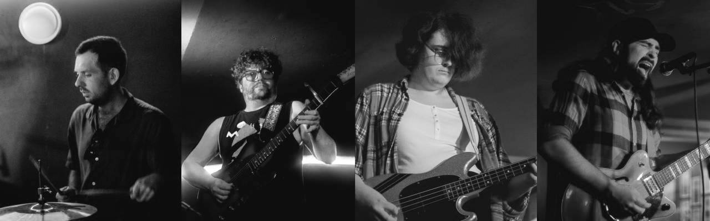

CRIMSON CITY
BIOGRAPHY
Crimson City play upbeat music about having a bad time. Mixing the gritty country flecked rock of early R.E.M, the heartfelt feelings and sardonic humour of The Mountain Goats, the surreal sweaty punk of Pixies: Crimson City blend these powerful influences into something truly compelling and original.
Currently working on recording their first single, a double A-side with songs about becoming a dark lord to spite your worthless enemies, and having someone who loves you even when you feel like you don’t deserve it.
CONTACT & LINKS
PRESS KIT DOWNLOAD: Crimson City Press Kit
EMAIL: crimsoncitycardiff@gmail.com
INSTAGRAM: https://www.instagram.com/crimsoncityband/
MUSIC
LIVE
More shows soon...
THE BAND
James Kapella
James has been in bands you’ve never heard of for the last 20 years.
He lives in Cardiff and writes songs influenced by disgusting heavy metal, youtube videos about synthesizers, trying to love the world around you even when it’s hard, horror manga, baths that are slightly too hot, deeply uncool Prog Rock, dead musicians, birds, and being too dumb to quit.
Shaun McHugh
Shaun cut his teeth on the pub toilet circuit, playing noisy free-form rock at anyone who would listen. He lives in Cardiff and has a real job, but he’d rather not. Inspired by anything that gives him the shivers, stealing ideas from King Gizzard, Hendrix, Tony TS McPhee, and Guthrie Govan. Definitely not addicted to buying guitar pedals.
Elle Barker
Elle has been in and around the UK DIY music scene for the last ten years, mostly playing in noise and punk bands. She plays bass in Crimson City and is also a member of Sherbet Flies and A Lack of North. Her main influences as a bassist are Kim Deal, Mike Watt, Tina Weymouth, and Paul McCartney.
Harry Greenway
Harry plays drums and percussion in Crimson City, having come from a background of performing in bands, orchestras and ensembles. He has a masters in Percussion from RWCMD and takes influence from a mixture of prog rock, jazz and dance music.